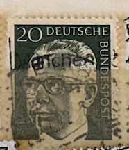
| SOURCE | TITLE| IMAGE MATCH | click to source page |
| eBay | West Germany - 1970 - Gustav Heinemann - 20Pfg - Used - TKS273* | eBay | 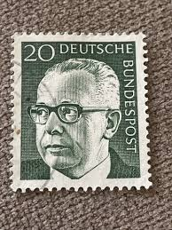 |
| HipStamp | Germany Scott 1035 used 1970-1973 President Heinemann stamp | Europe - Germany & Colonies - Germany, General Issue Stamp / HipStamp | 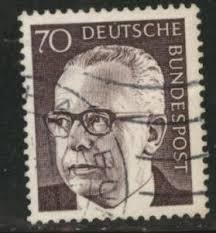 |
| eBay | GERMANY 1038A - President Gustav Heinemann "1973 Olive Grey" (pc14377) | eBay |  |
| eBay | 8 Number German & Colonies Stamps for sale | eBay | 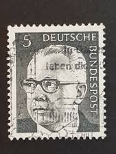 |
| Poppe Stamps | Poppe Stamps: German Federal Republic, 1970, 1537, Presidents - stamps for sale by theme and country | 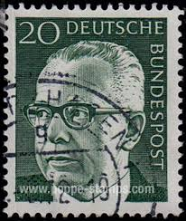 |
| Poppe Stamps | Poppe Stamps: German Federal Republic, 1970, 1536, Presidents, Presidents - stamps for sale by theme and country |  |
| eBay | BRD FRG #Mi691 MNH 1972 Gustav Heinemann President [1039 YT516B SG1548] | eBay | 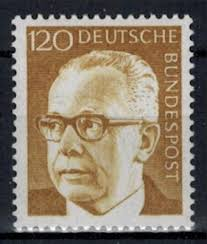 |
| eBay | ALLEMAGNE FEDERALE, BUND BRD, 1970, timbre 516, G HEINEMANN, oblitéré VF used | eBay | 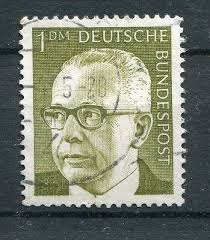 |
| HipStamp | Germany #1030A Single Used | Europe - Germany & Colonies - Germany, General Issue Stamp / HipStamp |  |
| eBay | Heinemann in Briefmarken aus der Brd (1970-1979) online kaufen | eBay | 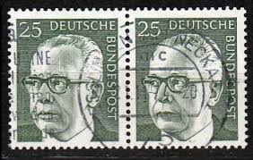 |
| Poppe Stamps | Poppe Stamps: German Federal Republic, 1970, 1536, Presidents, Presidents - stamps for sale by theme and country |  |
| HipStamp | Germany 1029 USED | Europe - Germany & Colonies - Germany, General Issue Stamp / HipStamp | 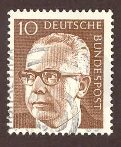 |
| Poppe Stamps | Poppe Stamps: German Federal Republic, 1970, 1546, Presidents, Presidents - stamps for sale by theme and country | 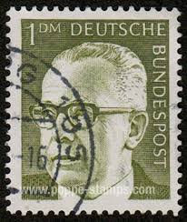 |
| Poppe Stamps | Poppe Stamps: German Federal Republic, 1970, 1536, Presidents, Presidents - stamps for sale by theme and country |  |
| eBay UK | GERMANY 50 Pfennig Deutsche Stamp : President Dr Heinemann SG DE 1541 | eBay UK | 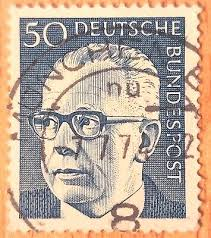 |
| Dreamstime.com | Walter Heinemann Stock Photos - Free & Royalty-Free Stock Photos from Dreamstime | 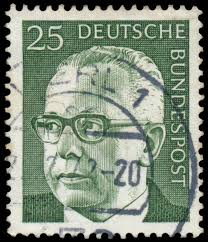 |
| Dreamstime.com | 1970 Newspaper Stock Photos - Free & Royalty-Free Stock Photos from Dreamstime | 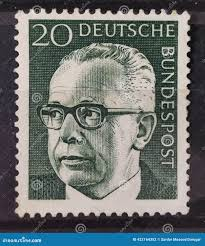 |
| Poppe Stamps | Poppe Stamps: German Federal Republic, 1970, 1546, Presidents, Presidents - stamps for sale by theme and country | 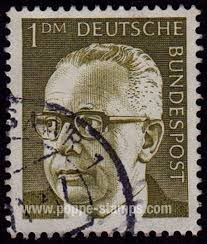 |
| iStock | Postage Stamp East Germany 20 For Peace In The World Stock Photo - Download Image Now - iStock | 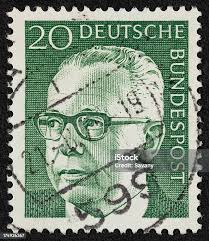 |
| Dreamstime.com | Mikhail Botvinnik, Chess Players Serie, Circa 1999 Editorial Stock Image - Image of portrait, national: 116019604 | 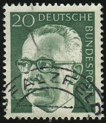 |
| Shutterstock | Germany Circa 1971 Postage Stamp Germany Stock Photo 1950633385 | Shutterstock | 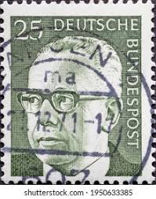 |
| Dreamstime.com | 924 German Federal Post Stock Photos - Free & Royalty-Free Stock Photos from Dreamstime | 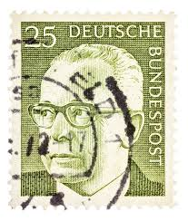 |
| Alamy | President heinemann hi-res stock photography and images - Alamy |  |
| Shutterstock | 1+ Thousand West Germany Postage Stamps Royalty-Free Images, Stock Photos & Pictures | Shutterstock | 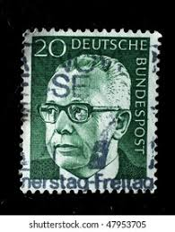 |
| Alamy | Postmarked stamp from the Federal Republic of Germany in the German buildings from twelve centuries, large size series Stock Photo - Alamy | 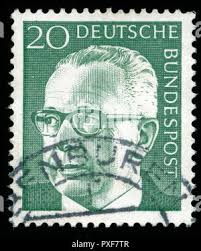 |
| iStock | Former German President On An Old Stamp Stock Photo - Download Image Now - Gustav Heinemann, 1971, Black Background - iStock |  |
| Shutterstock | 2+ Thousand Deutsche Bundespost Royalty-Free Images, Stock Photos & Pictures | Shutterstock | 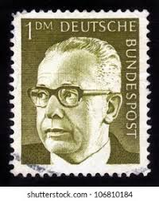 |
| Alamy | Dr gustav heinemann hi-res stock photography and images - Alamy | 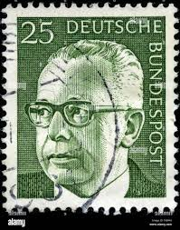 |
| Alamy | Stamp printed in ddr shows hi-res stock photography and images - Alamy |  |
| Alamy | 1899 1976 hi-res stock photography and images - Alamy | 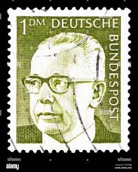 |
| Shutterstock | Circa Germany West: Over 1,138 Royalty-Free Licensable Stock Photos | Shutterstock | 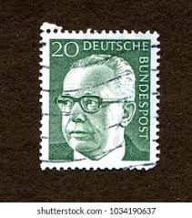 |
| Dreamstime.com | Heinemann Serie Stock Photos - Free & Royalty-Free Stock Photos from Dreamstime |  |
| Shutterstock | 19,406 German Post Stamp Royalty-Free Images, Stock Photos & Pictures | Shutterstock | 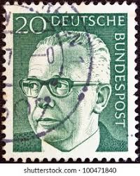 |
| Alamy | Postmarked stamps from the Federal Republic of Germany in the Federal President Dr. Gustav Heinemann series Stock Photo - Alamy | 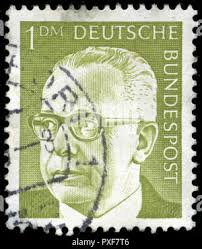 |
| Shutterstock | 3+ Hundred Mark Walters Royalty-Free Images, Stock Photos & Pictures | Shutterstock | 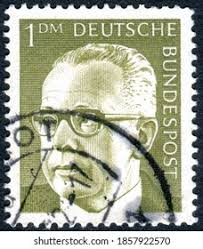 |
| Shutterstock | Karnal Haryana India -august 5th 2025-closeup Stock Photo 2671225935 | Shutterstock | 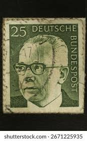 |
| Shutterstock | 1,111 West Germany Postage Stamps Royalty-Free Images, Stock Photos & Pictures | Shutterstock |  |
| Dreamstime.com | GERMANY - CIRCA 1970: a Postage Stamp from Germany, Showing a Portrait of the Politician and Federal President Gustav Editorial Photo - Image of postmark, leader: 244396426 |  |
| Shutterstock | 2+ Thousand Deutsche Bundespost Royalty-Free Images, Stock Photos & Pictures | Shutterstock | 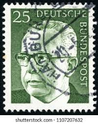 |
| Mystic Stamp Company | 1029-30 - 1970 Germany - Mystic Stamp Company |  |
| Bob Shop | Germany & Colonies - 2 x Deutsche Bundespost Stamps was listed for 0.00 on 28 Jul at 09:02 by books4less in Cradock (ID:649298742) | 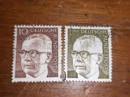 |
| Todocolección | alemania rfa 1978 scott 1281-1282 usado - Buy Antique stamps of Germany on todocoleccion | 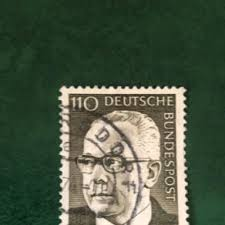 |
| Shutterstock | 2+ Thousand Deutsche Bundespost Royalty-Free Images, Stock Photos & Pictures | Shutterstock | 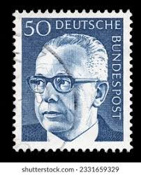 |
| Find Your Stamps Value | Value of deutsche bundespost berlin stamps |  |
| Dreamstime.com | Dr. h.c editorial stock photo. Image of president, mail - 135413353 | 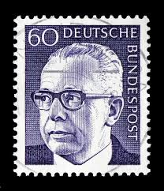 |
| HipStamp | Germany #1031 30pf President Gustav Heinermann used VF | Europe - Germany & Colonies - Germany, General Issue Stamp / HipStamp | 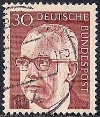 |
| Todocolección | sello usado. alemania federal. albertus magnus, - Buy Antique stamps of Germany on todocoleccion | 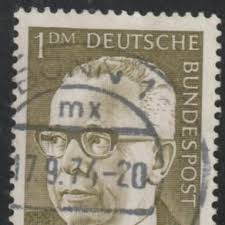 |
| allnumis.com | 150 Pfennig - Dr. H.C. Gustav Heinemann (1899-1976), 3rd Federal President, People - Personalities-man - Germany - Stamp - 49839 | 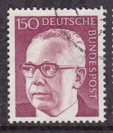 |
| Alamy | Portrait of Gustav Heinemann (1899-1976) as Minister of Justice from 1968 Stock Photo - Alamy | 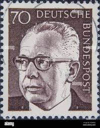 |
| Alamy | Deutsche bundespost stamp hi-res stock photography and images - Alamy | 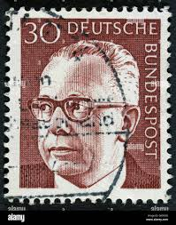 |
| Shutterstock | deutsche_post": Over 5,976 Royalty-Free Licensable Stock Photos | Shutterstock |  |
| Shutterstock | 5+ Hundred Heinemann Royalty-Free Images, Stock Photos & Pictures | Shutterstock |  |
| Alamy | Dr gustav hi-res stock photography and images - Alamy |  |
| Dreamstime.com | Gustav Heinemann Presidente De La República Federal De Alemania Occidental De 1969 a 1974 Foto de archivo editorial - Imagen: 223540028 | 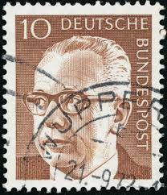 |
| Dreamstime.com | Isolated German Polizei Logo in Front of Police Station Against Blue Sky Editorial Image - Image of germany, german: 178790435 |  |
| Dreamstime.com | Isolated German Bohemia and Moravia Stamp Editorial Stock Photo - Image of bohemia, german: 352559358 | 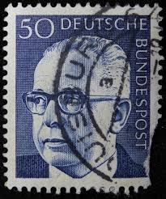 |
| Alamy | German federal mail deutsche bundespost hi-res stock photography and images - Alamy |  |
| Stamp Community Forum | German Bundespost Query - Stamp Community Forum | 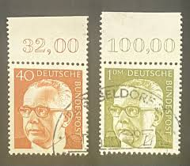 |
| Dreamstime.com | H Envelope Stock Illustrations – 68 H Envelope Stock Illustrations, Vectors & Clipart - Dreamstime |  |